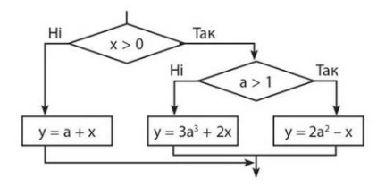

Тема 2.
Умовний оператор
Теорія
Завдання
Завдання №1
Якщо число додатне, то збільшіть його на 10. Інакше зменшіть на 10.
Завдання №2
Кондиціонер включається, якщо в кімнаті температура більша за 20 градусів; якщо температура 20 градусів або нижче, кондиціонер вимикається . Напишіть програму, яка визначить, що робитиме кондиціонер. Вводиться одне ціле число – поточна температура в кімнаті.
Завдання №3
Дано натуральне число. Потрібно визначити, чи є рік із цим номером високосним. Якщо рік є високосним, виведіть "Високосний", інакше виведіть "Не високосний". Нагадаємо, що відповідно до григоріанського календаря, рік є високосним, якщо його номер кратний 4, але не кратний 100, а також якщо він кратний 400.
Завдання №4
За введеними координатами з'ясувати, до якої координатної чверті належить точка.
Додаткове завдання
Написати програму по даній блок-схемі. З клавіатури вводиться a та x. Потрібно знайти y.
